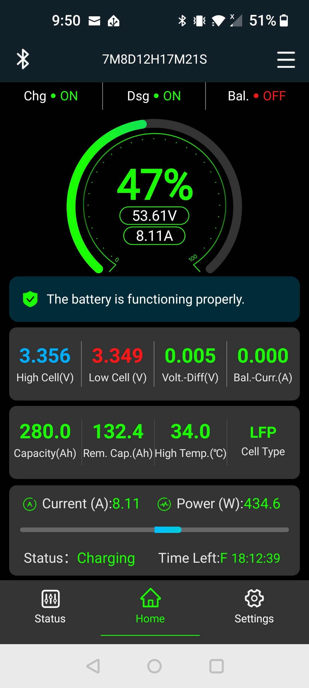
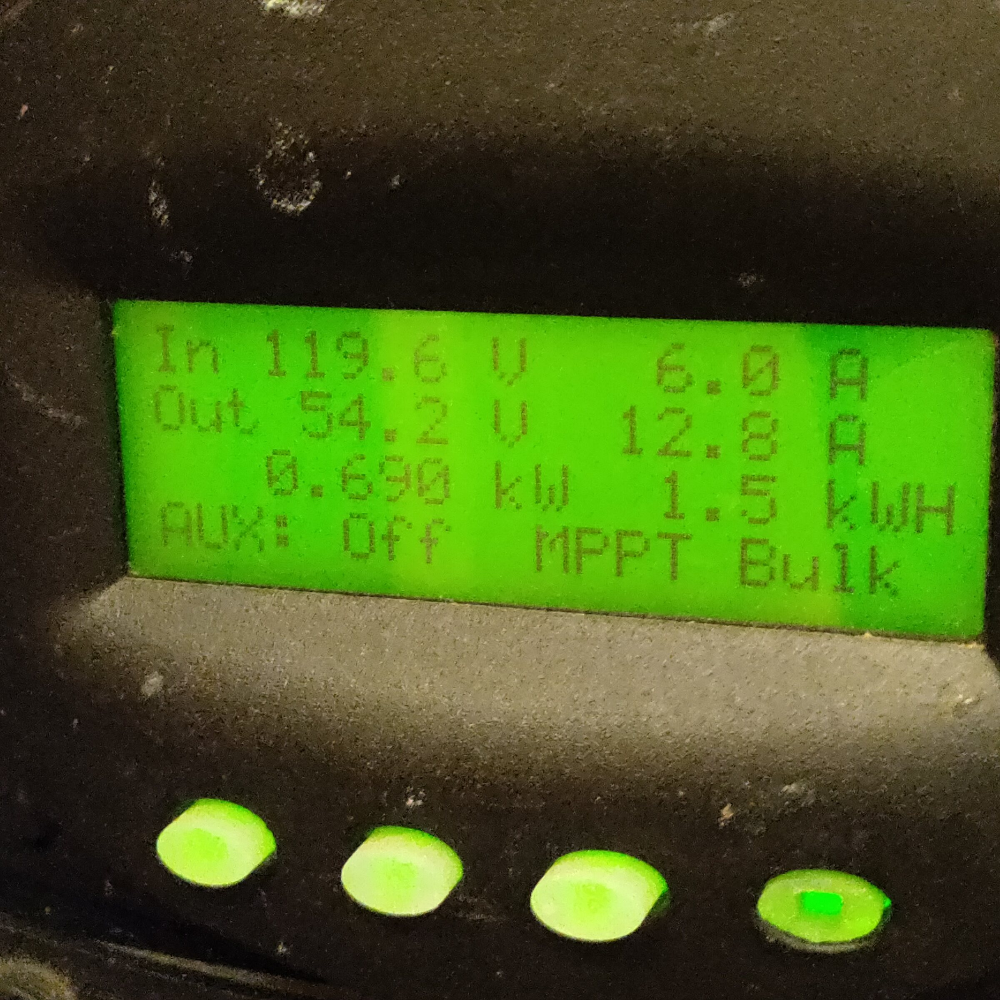

Field Report 012 · Energy
Fieldstation Solar
Charging
modification
Today we took a closer look at the Fieldstation solar system to understand why the batteries rarely seemed to charge beyond about 80 percent and why the solar array appeared to be producing less power than expected.

Opening Up the Solar Charge
Today we took a closer look at the Fieldstation solar system to understand why the batteries rarely seemed to charge beyond about 80 percent and why the solar array appeared to be producing less power than expected.
The system uses six 395-watt solar panels, an OutBack FLEXmax 60 charge controller, and a 16-cell, 280 Ah LiFePO4 battery bank managed by a JK BMS.
We started by documenting the OutBack settings instead of changing things blindly. The controller was set to 56.2 volts Absorb, 54.0 volts Float, an 18-minute Absorb period, and a 24-amp output-current limit.
One recent change immediately showed up: a battery temperature sensor that had been connected the previous week was actively lowering the charge voltages. Because LiFePO4 batteries do not use the same temperature-compensated charging strategy as lead-acid batteries, we disconnected the sensor. The controller immediately returned to its programmed 56.2 V Absorb and 54.0 V Float targets.
We also confirmed that automatic equalization is disabled. Equalization is a lead-acid charging function and is not something we want the lithium battery bank doing.
The JK BMS revealed another clue. Its 100-percent state-of-charge reference had been set higher than the voltage the OutBack normally reaches. That helped explain why Home Assistant and the BMS often stopped showing a state of charge around 80 percent even when the battery had received a good solar charge. We corrected the full-charge reference so the BMS can synchronize itself during a normal charging cycle.
Finally, we increased the FLEXmax charging limit from 24 amps to 30 amps.
The result was immediate. With full sun available, the OutBack began delivering about 30 amps at 54.5 volts — roughly 1.64 kilowatts. At the same moment the JK BMS showed about 1.33 kilowatts actually entering the battery. The difference is useful information too: it represents the refrigerators, network equipment, inverter overhead, and other Fieldstation loads consuming solar power before it reaches the battery.
Nothing major was replaced today. Instead, we learned more about how the existing system works and removed several conservative or mismatched settings that were keeping it from making full use of the available solar energy.
The next step is monitoring. Over the next few sunny charge cycles we will watch whether the battery now reaches a properly synchronized full state of charge and how the higher 30-amp solar limit changes daily energy collection.
Photographic Record
The work, seen in place
Selected photographs from the private FieldStation source record.


System Thread
Where this system connects
Public synopsis derived from Boulder Gardens Fieldstation Workbook source record FR012. Detailed equipment records, calculations, unresolved questions, and corrections remain in the workbook.